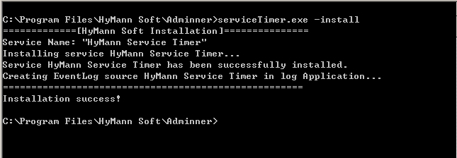

FAQs |
You'd better install it on the computer you frequently logins, and control all services on it.
On the computer you want to install Service Timer on, open folder %windir%MicroSoft.Net/Framework/, check if there are folder "v4.0.30319" or other version above ,if there are not , please download and install .Net Framework 4.0.30319 or above：
download .Net Framework and install: ver 4.0 ver 4.5 (you can select the language you want to install).
During install, the service "HyMann Service Timer" will be installed, you should change its start type to automatic or automatic(delayed) and start it manually after you setup the timer tasks.

You can install/uninstall HyMann Service Timer at anytime by:
serviceTimer.exe -install or serviceTimer.exe -uninstall.
To run the software, you need to:Start Services(on all computers):
Change Firewall Setting(on all computers):
1.Click Start, click Control Panel, and then click System and Security.
2.Under the Windows Firewall heading, click Allow a program through Windows Firewall.
4.Using Service Timer Step By Step
Default login user and password is: admin
1.Change the password of admin and timeService in the "User Management" window. Add another login user for backup.
2.Specify the domain, remote account, remote password in the "User Management" window if you use same user account to manage computers.
3.Define your own Type Of service in the "Type Of service Management" window.
4.If you have same service or program in lot of computers, define your own Service's Type in the "Service's Type Management" window.
5.Performing a computer scan in the "Computer Scan" window, to gather all computer's information in your LAN.
6.Manage computers data in the "IP-Computer Management" window. If you have diffrent account for remote computer, you need to specify them.
7.Performing a service scan in the "Service Scan" window, to gather all services info you want to control.
8.Manamge services data and add program data as your wish in the "Service Management" window.
OK,all data is prepared, enjoy it!
9.If you want to use service "HyMann Service Timer", please add tasks in the "Service Timer Task Management" window ,change it's start type to auto, change it's Login credentials to your account and password, than start service manually.
| 5.Computer Not online:
Ping IP to see if computer is online and alive. 6.Can't get computer namePlease check Conditions Precedent befor you do anything. |
Run wbemtest.exe ,connect to \\target ipaddress\root\cimv2 with user account and password on target computer.(Replace target ipaddress first)
Follow the result:
1.RPC server is unavailable
ping target computer to see if it's alive.
check the firewall on target computer, sure the "Windows Management Instrumentation(WMI)" is allowed on LAN.
2.Access is denied
User account and password not correct or have no permission on target computer. Add the account to group administrators, if account and password are correct.
If you are in workgroup, and target computer have UAC in it:
see why and how to Handling Remote Connections Under UAC.
3.Teh service can't started, either because it is disabled or because it has no enabled
Check the service "Windows Management Instrumentation", try to start it.
4.Class not registered
Some WMI class is wrong on target computer.
Please read below.
5.WMI: Generic failure, or Not found
WMI have error on target computer.
Restart the target computer, try again. If error still there, try to repaire WMI:
1) Start the target computer and press F8 on boot up and select Safe Mode.
2) In the start menu type "cmd" (without quotes) and on the top search result, right click the program icon and choose Run as administrator
3) Type "net stop winmgmt" (without quotes) and press Enter to make certain the Windows Management Instrumentation (WMI) service is not running.
4) Open a Windows Explorer and locate the path to C:\ windows\system32\WBEM\ folder and rename the Repository folder to something else like RepositoryOLD
5) Reboot and restart computer as normal.
6) In the start menu type "cmd" (without quotes) and on the top search result, right click the icon and choose Run as administrator
7) Type "net stop winmgmt" (without quotes) and press enter to stop the WMI service.
8) Type "winmgmt /resetRepository" (without quotes)Â and then restart the computer.
7. HyMann Service Timer don't work
1) Please check Service login account is the member of administrator.
2) Check if the HyMann Service Timer is running.
3) Please check the log in file serviceTimer.log.
8. Is Service Timer safe?
Yes.
1. The database file data.db is encrypted.
2. Service Timer encrypt all password before save it to datebase.
3. Your login password is encrypt online.
4. All password is encrypt before transfer.
9. Still have questions?
Please feel free to e-mail us at support@hymann.com, we will be happy to answer any questions you have.